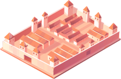

Insula
Forum

Koszary
Świątynia
Amfiteatr
Rzymska Insula to wielopiętrowy, mieszkalny budynek w starożytnym Rzymie. Insule były charakterystycznymi strukturami, zbudowanymi z cegły i kamienia, z licznymi apartamentami lub pokojami wynajmowanymi przez ludność miejską. Każde piętro miało swoje własne mieszkania, zazwyczaj składające się z małego pomieszczenia z kuchnią, łazienką i sypialnią. Insule oferowały tanią i praktyczną formę zakwaterowania dla wielu mieszkańców Rzymu, chociaż często były ciasne, biedne i niezbyt bezpieczne.
Rzymskie Forum było sercem politycznym, społecznym i handlowym starożytnego Rzymu. Stanowiło też centralne miejsce spotkań obywateli. Odbywano tam publiczne wystąpienia, rozstrzygano spory prawne i handlowano. Rzymskie Forum otaczały imponujące budowle, takie jak Bazylika Julia i Bazylika Emilia, oraz świątynie, takie jak Świątynia Saturna i Świątynia Cezara. Było ważnym symbolem potęgi i bogactwa Imperium Rzymskiego. Dziś ruiny Forum stanowią popularną atrakcję turystyczną, pozostawiając świadectwo dawnej wielkości i wpływu Rzymu.
Koszary rzymskie to miejsca zakwaterowania dla żołnierzy w starożytnym Rzymie. Były to duże kompleksy budynków, które służyły jako miejsce zamieszkania, szkolenia i organizacji wojskowych jednostek. Koszary były zazwyczaj budowane wokół centralnego dziedzińca lub placu, z różnymi pomieszczeniami, takimi jak sypialnie, jadalnie, stajnie i magazyny. Były one dobrze zorganizowane i zapewniały żołnierzom podstawowe udogodnienia, takie jak łaźnie i miejsca do gotowania. Koszary odgrywały kluczową rolę w utrzymaniu dyscypliny, treningu i przygotowaniu rzymskiej armii do walki.
Rzymska świątynia była miejscem kultu i czci dla bogów i bogiń w starożytnym Rzymie. Budowle te miały zazwyczaj klasyczną architekturę, składającą się z kolumn, portyków i głównego sanktuarium. Świątynie były zwykle poświęcone określonemu bóstwu i pełniły funkcję miejsca modlitwy, składania ofiar oraz przeprowadzania rytuałów religijnych. Wnętrze świątyni często zawierało posągi i dekoracje związane z danym bóstwem. Świątynie były centralnymi punktami życia religijnego i społecznego w starożytnym Rzymie, a ich zachowane ruiny stanowią świadectwo dawnej wiary i kultury.
Rzymski amfiteatr był olbrzymią areną, w której odbywały się walki gladiatorów, polowania na zwierzęta i inne publiczne widowiska. Był to eliptyczny budynek, z częścią centralną otoczoną widownią w kształcie okręgu lub owalu. Widownia składała się z szeregów kamiennych ławek, które mogły pomieścić dużą liczbę widzów. Areny były odpowiednio zaprojektowane, aby umożliwić widzom łatwe obserwowanie wydarzeń na arenie. Amfiteatry, takie jak Koloseum, były symbolem potęgi i wspaniałości Rzymu.
Insula
Forum
Koszary
Świątynia
Amfiteatr